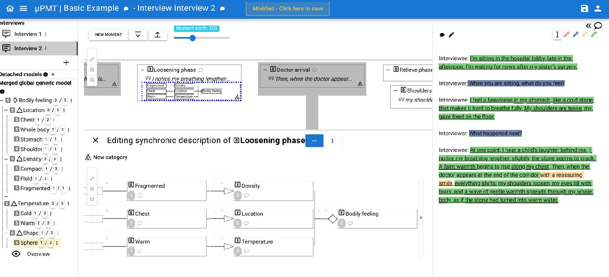

μPMT is aimed at researchers using microphenomenology interviews (also known as explicitation interviews) to study lived experience. It has been designed to help analyze the micro-dynamics of experience as described in interview transcriptions, by modelling and formalizing the sequential unfolding of "experience moments" described with categories and properties, and linked to the descriptemes - excerpts of the transcript - that justify them.

μPMT is open-source software released under the GNU GPLv3 license. It is designed to support researchers in the field of micro-phenomenology and lived experience studies, providing tools for systematic analysis of interview transcripts and experience modeling.